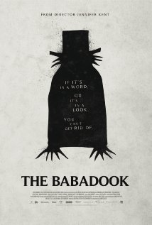

24일날 개봉했는데 오늘보고왔다
M군 추천으로 봤는뎅 재미있어용
공포영화로선 드물게 Empire매거진에서 별5개를 줬다능
BABADOOK이 의미하는 바도 매우 신선하고
영화를 다 보면 고개를 끄덕일수 있는 내용이라 더 맘에듭니당
호러 = 깜짝 놀래키기 + 잔인한 장면 이라고 생각하는
영화를 별로 좋아하지 않는지라
(그건 그냥 기분이 나쁜거지 무서운게 아니야아!! 라고 외치면서^^;;)
오랜만에 잘만든 공포영화를 본거 같아서 기분이 좋네용//
최근에 더웹툰 예고살인 - 도 봤는데
주인공 이시영씨가 아머링을 끼고
그게 꽤 중요한 아이템으로 사용되어서 놀랐음^^;;;
이것또한 이야기에 공을들인 느낌을 받아서
생각보다 재미있게 잘봤습니다
영화보고 난뒤 역시 죄짓고 살면 큰일나 ㅜㅜ
차카게 살아야지 ㅜㅜ 뭐 이런 자기반성을 하게 만든다능^^;;;
그리고 11월 런던에서는
London Korean Film Festival 이 열립니다
11월6일 오프닝 갈라 군도
7일 김기덕 감독 피에타 예매해놨습니다 홋홋
오프닝 갈라는 군도 영화 감독 플러스 무려 강동원이 온다는 군요
당일날 앞에 소녀팬들 많을려나
어쩌다보니 꾸준히 매년 가고있는데
꼬박꼬박 오프닝 갈라를 봤네용
2012년에는 도둑들 봤공
작년에는 숨박꼭질 보구 :)
올해는 두개 예매완료
그나저나 공식홈 웹사이트 좀 어떻게 안되나 ㅡㅡ;;;
티켓예매 섹션좀 바로 부킹페이지로 갈수있도록
편하게 만들어줬음 ㅡㅡ;;;
찾는것도 까다롭고 걍 내가 직접 상영관 웹사이트가서
타이틀로 찾아 예매하는게 훨 빠르니 이거참;;;;
게다가 11월6일 시작인데
홍보도 웹사이트 업데도 느려요 ㅜㅜ 느려 ㅜㅜ
예전부터 이해할수없는게
일본이나 여기는 공연정보가 엄청 빨리뜨고
예매&프로모션도 일찍시작하는 반면
한국은 뭐든 바로직전에 시작하는 느낌적느낌이;;;
좀 웃긴 에피소드로 꽤오래전 한국에 있을때 모 가수의 CD와 공연티켓을 구입
그리고 공연 바로 이틀인가 하루전에 CD에 들어있던 자동 경품응모??
뭐 이런거에 당첨되었으니 공연티켓 보내주겠다는 연락을 받은적이 있었다;;
이 말 듣자마자 '저 공연티켓 이미 샀는데요?' 라고 대답하니까
전화건사람도 웃고 나도 웃었었다 ㅋㅋㅋ
앞서 예매한 공연티켓과 더불어
이걸로 11월 12월도 볼게 꽤 많이생겨서 신납니당 헤헷